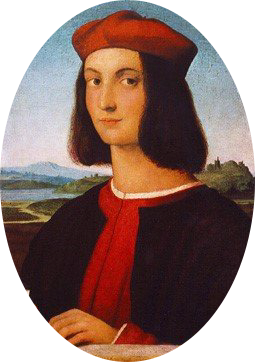

라파엘로 산치오

우르비노 공국의 궁정화가 조반니 산티의 아들로 태어났다.
11세에 당대 이름을 날리던 피에트로 페루지노의 공방에 들어가 도제, 조수로 활동하였다.
초기작에서 스승의 영향이 보인다. 라파엘로의 특징이기도 한데, 다른 화가의 장점을 흡수하여 한 발 더 나아가는 모습이 지속적으로 보이게 된다.
1500년부터 자립하여 그림을 의뢰받기 시작하였고, 1504년부터 피렌체에서 활동하였다. 1508년 로마로 건너가 교황 및 가톨릭교회의 의뢰로 많은 작품을 남겼다.
성실함과 사교적인 성품을 가졌다고 알려져 있으며, 짧은 생애에도 불구하고 많은 작품의 의뢰를 받아 훌륭히 마무리지었다. 르네상스의 절정을 이룬 화가답게 그의 그림은
고전 미술의 완성을 보여주고 있다. 르네상스 미술의 최고 덕목이자 서양 미술사에서 오랫동안 교과서처럼 여기는 '우아한 아름다움(Grazia)'의 원형을 만들었다.
로마-바티칸 뿐 아니라 우피치나 루브르 등 유럽 여행을 하며 여느 유명한 미술관을 가더라도 라파엘로의 작품은 꼭 확보해두고 있다.